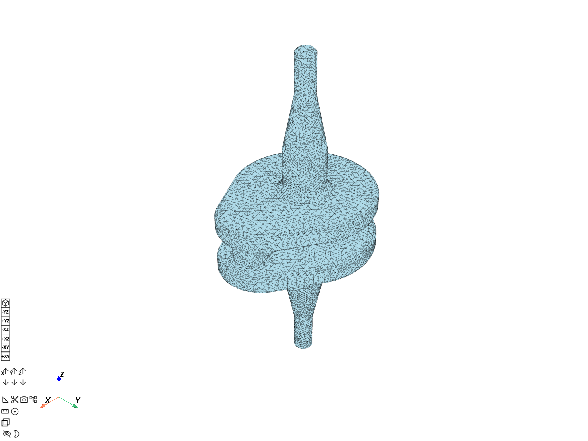
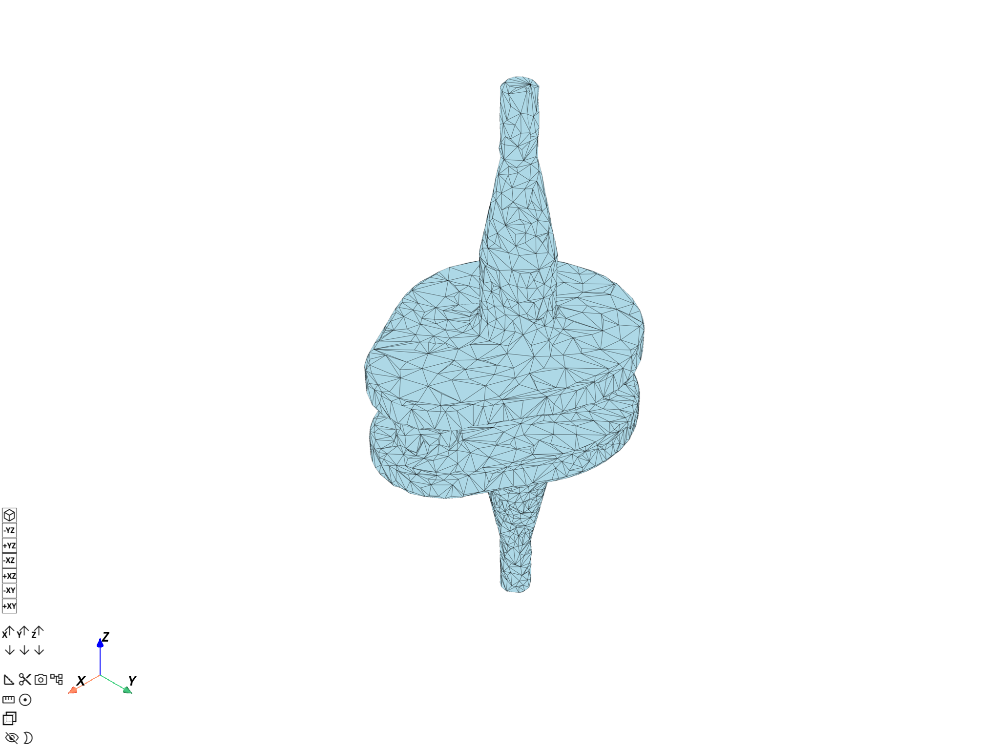
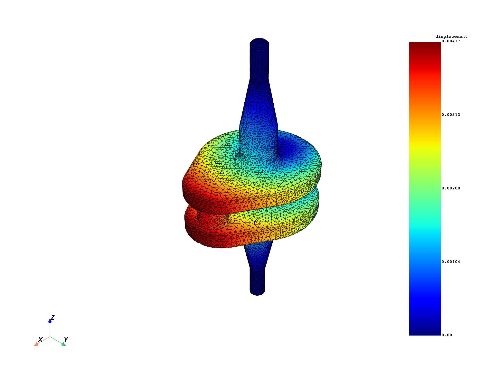
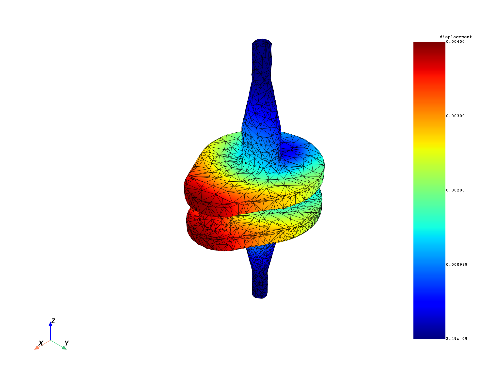
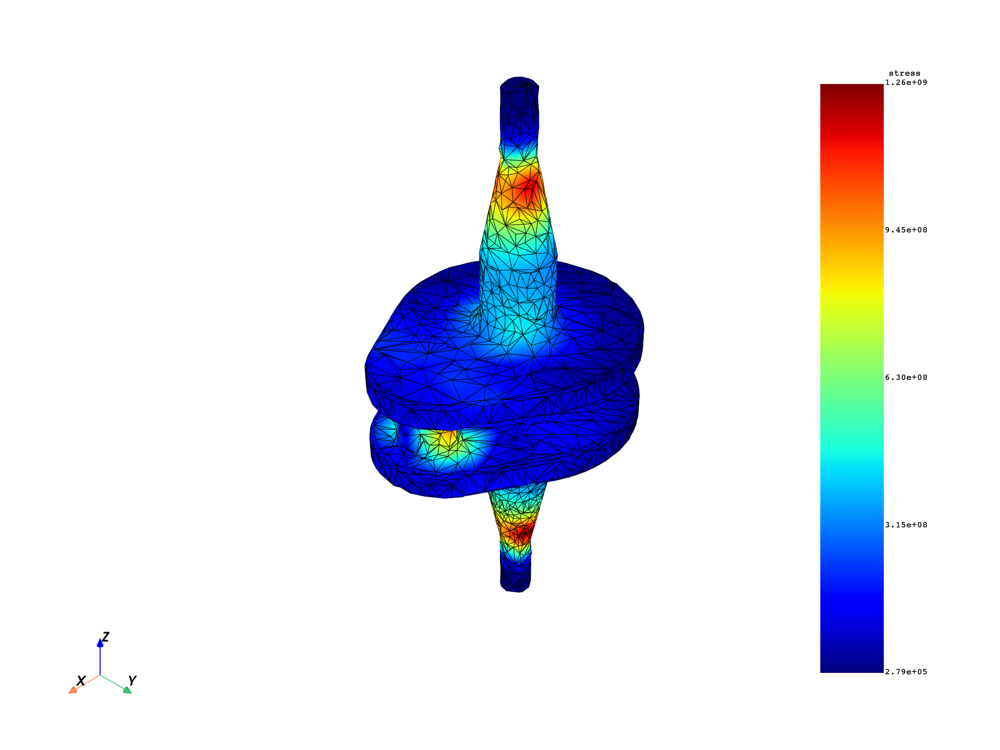
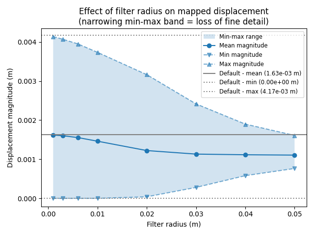

Note
Go to the end to download the full example code.
RBF-based workflow mapping#
Generate a reusable workflow for mapping results using Radial Basis Function (RBF) filters.
This tutorial demonstrates how to use the
prepare_mapping_workflow
operator to generate a reusable
Workflow that maps results between meshes with
different topologies using RBF filters.
Unlike shape-function interpolation (used by on_coordinates and on_reduced_coordinates),
RBF-based mapping can transfer data between non-conforming meshes where element boundaries do
not align. It evaluates target values by weighting surrounding source nodes based on distance.
The filter radius acts like a standard deviation in Gaussian weighting—small radii capture
local gradients while larger radii produce smoother trends. The optional influence box limits
the spatial search window as a computational optimization.
The resulting workflow accepts a source field and returns the interpolated target field; it can be reused for multiple field types without repeating the setup step.
Import modules and load the model#
Import the required modules and load a result file.
# Import the ``ansys.dpf.core`` module
# Import Matplotlib for plotting
import matplotlib.pyplot as plt
from ansys.dpf import core as dpf
# Import the examples and operators modules
from ansys.dpf.core import examples, operators as ops
Load model#
Download the crankshaft result file and create a
Model object.
result_file = examples.download_crankshaft()
model = dpf.Model(data_sources=result_file)
print(model)
DPF Model
------------------------------
Static analysis
Unit system: MKS: m, kg, N, s, V, A, degC
Physics Type: Mechanical
Available results:
- node_orientations: Nodal Node Euler Angles
- displacement: Nodal Displacement
- velocity: Nodal Velocity
- acceleration: Nodal Acceleration
- reaction_force: Nodal Force
- stress: ElementalNodal Stress
- elemental_volume: Elemental Volume
- stiffness_matrix_energy: Elemental Energy-stiffness matrix
- artificial_hourglass_energy: Elemental Hourglass Energy
- kinetic_energy: Elemental Kinetic Energy
- co_energy: Elemental co-energy
- incremental_energy: Elemental incremental energy
- thermal_dissipation_energy: Elemental thermal dissipation energy
- elastic_strain: ElementalNodal Strain
- elastic_strain_eqv: ElementalNodal Strain eqv
- element_orientations: ElementalNodal Element Euler Angles
- structural_temperature: ElementalNodal Structural temperature
------------------------------
DPF Meshed Region:
69762 nodes
39315 elements
Unit: m
With solid (3D) elements
------------------------------
DPF Time/Freq Support:
Number of sets: 3
Cumulative Time (s) LoadStep Substep
1 1.000000 1 1
2 2.000000 1 2
3 3.000000 1 3
Define the input support#
The input support is the mesh from which results will be mapped. Use
bounding_box
to inspect the spatial extent of the crankshaft before choosing a filter radius.
input_mesh = model.metadata.meshed_region
bb_data = input_mesh.bounding_box.data[0] # [xmin, ymin, zmin, xmax, ymax, zmax]
print(
f"Bounding box: x=[{bb_data[0]:.4f}, {bb_data[3]:.4f}] "
f"y=[{bb_data[1]:.4f}, {bb_data[4]:.4f}] "
f"z=[{bb_data[2]:.4f}, {bb_data[5]:.4f}] m"
)
Bounding box: x=[-0.0250, 0.0350] y=[-0.0250, 0.0250] z=[-0.0720, 0.0500] m
Define the output support#
The output support is the target mesh onto which results will be mapped. To demonstrate RBF mapping between non-conforming meshes with genuinely different topologies, the output mesh is built in two steps:
Extract the external surface of the crankshaft using the
skinoperator.Decimate that surface to ~30 % of its original faces using
decimate_mesh, which produces a coarser triangulated mesh.
This gives a source (solid, hexahedral) / target (surface, triangulated) pair with entirely different topology — exactly the scenario RBF-based mapping is designed for.
skin_mesh = ops.mesh.skin(mesh=input_mesh).outputs.mesh()
output_mesh = ops.mesh.decimate_mesh(
mesh=skin_mesh,
preservation_ratio=0.3,
).outputs.mesh()
print(
f"Source mesh: {input_mesh.nodes.n_nodes} nodes, {input_mesh.elements.n_elements} elements (solid)"
)
print(
f"Skin mesh: {skin_mesh.nodes.n_nodes} nodes, {skin_mesh.elements.n_elements} elements (surface)"
)
print(
f"Decimated target mesh:{output_mesh.nodes.n_nodes} nodes, {output_mesh.elements.n_elements} elements (triangles)"
)
input_mesh.plot(title="Source mesh (crankshaft solid)")
output_mesh.plot(title="Target mesh (decimated surface)")


Source mesh: 69762 nodes, 39315 elements (solid)
Skin mesh: 32922 nodes, 16460 elements (surface)
Decimated target mesh:2471 nodes, 4938 elements (triangles)
([], <pyvista.plotting.plotter.Plotter object at 0x0000024D0226E310>)
Prepare the mapping workflow#
Call prepare_mapping_workflow to build an RBF-based
Workflow that maps fields from the input
support to the output support. The filter radius controls the RBF smoothing scale.
A value of 5 mm (0.005 m) is appropriate for the crankshaft which spans ~60 mm
in its narrowest dimension.
filter_radius = 0.005
prepare_op = ops.mapping.prepare_mapping_workflow(
input_support=input_mesh,
output_support=output_mesh,
filter_radius=filter_radius,
)
mapping_workflow = prepare_op.eval()
mapping_workflow.progress_bar = False
print("Generated mapping workflow:")
print(mapping_workflow)
Generated mapping workflow:
DPF Workflow:
with 3 operator(s): apply_mapping, make_rbf_mapper, default_value
the exposed input pins are: optional_target_support, source
the exposed output pins are: target
Examine the generated workflow#
The workflow exposes a "source" input pin and a "target" output pin.
print("Workflow operator names:")
for i, name in enumerate(mapping_workflow.operator_names):
print(f" {i + 1}. {name}")
Workflow operator names:
1. apply_mapping
2. make_rbf_mapper
3. default_value
Map displacement using the workflow#
Connect a displacement field to the workflow "source" pin and retrieve the
interpolated result from the "target" pin.
displacement_fc = model.results.displacement.eval()
displacement_field = displacement_fc[0]
input_mesh.plot(field_or_fields_container=displacement_fc, title="Source displacement (crankshaft)")
input_pin_name = "source"
output_pin_name = "target"
mapping_workflow.connect(pin_name=input_pin_name, inpt=displacement_field)
mapped_displacement_field = mapping_workflow.get_output(
pin_name=output_pin_name,
output_type=dpf.types.field,
)
output_mesh.plot(
field_or_fields_container=mapped_displacement_field,
title="Mapped displacement on decimated surface",
)
print(f"Source field: {len(displacement_field.data)} entities (solid nodes)")
print(f"Mapped field: {len(mapped_displacement_field.data)} entities (surface nodes)")


Source field: 69762 entities (solid nodes)
Mapped field: 2471 entities (surface nodes)
Reuse the workflow for a different result type#
The same workflow can be reconnected to map another field type without rebuilding the RBF setup.
stress_fc = model.results.stress.on_location(dpf.locations.nodal).eval()
stress_field = stress_fc[0]
mapping_workflow.connect(pin_name=input_pin_name, inpt=stress_field)
mapped_stress_field = mapping_workflow.get_output(
pin_name=output_pin_name,
output_type=dpf.types.field,
)
output_mesh.plot(
field_or_fields_container=mapped_stress_field, title="Mapped stress on decimated surface"
)

(None, <pyvista.plotting.plotter.Plotter object at 0x0000024D02971590>)
Add the influence box parameter#
The influence box further limits the RBF search window and can improve performance for sparse or asymmetric meshes.
influence_box = 0.01
prepare_op_with_box = ops.mapping.prepare_mapping_workflow(
input_support=input_mesh,
output_support=output_mesh,
filter_radius=filter_radius,
influence_box=influence_box,
)
mapping_workflow_with_box = prepare_op_with_box.eval()
mapping_workflow_with_box.progress_bar = False
mapping_workflow_with_box.connect(pin_name=input_pin_name, inpt=displacement_field)
mapped_disp_with_box = mapping_workflow_with_box.get_output(
pin_name=output_pin_name, output_type=dpf.types.field
)
output_mesh.plot(
field_or_fields_container=mapped_disp_with_box,
title="Mapped displacement with influence box (decimated surface)",
)
(None, <pyvista.plotting.plotter.Plotter object at 0x0000024D5A1F71D0>)
Effect of filter radius on mapping quality#
A larger filter radius produces smoother interpolation but may lose fine details. Compare the displacement range across several radii.
A reference value is first obtained by running the mapping without setting
filter_radius, so the operator uses its built-in default. The swept
values are then plotted against this untuned baseline.
ref_prep_op = ops.mapping.prepare_mapping_workflow(
input_support=input_mesh,
output_support=output_mesh,
)
ref_workflow: dpf.Workflow = ref_prep_op.eval()
ref_workflow.progress_bar = False
ref_workflow.connect(pin_name=input_pin_name, inpt=displacement_field)
ref_result = ref_workflow.get_output(pin_name=output_pin_name, output_type=dpf.types.field)
filter_radii = [0.001, 0.003, 0.006, 0.01, 0.02, 0.03, 0.04, 0.05]
mean_mags = []
min_mags = []
max_mags = []
for radius in filter_radii:
prep_op = ops.mapping.prepare_mapping_workflow(
input_support=input_mesh,
output_support=output_mesh,
filter_radius=radius,
)
workflow: dpf.Workflow = prep_op.eval()
workflow.connect(pin_name=input_pin_name, inpt=displacement_field)
workflow.progress_bar = False
result = workflow.get_output(pin_name=output_pin_name, output_type=dpf.types.field)
norm_field = ops.math.norm(field=result).outputs.field()
min_max_op = ops.min_max.min_max(field=norm_field)
min_mags.append(min_max_op.outputs.field_min().data[0])
max_mags.append(min_max_op.outputs.field_max().data[0])
mean_mags.append(
ops.math.accumulate(fieldA=norm_field).outputs.field().data[0] / norm_field.scoping.size
)
ref_norm_field = ops.math.norm(field=ref_result).outputs.field()
ref_min_max_op = ops.min_max.min_max(field=ref_norm_field)
ref_min_mag = ref_min_max_op.outputs.field_min().data[0]
ref_max_mag = ref_min_max_op.outputs.field_max().data[0]
reference_mean_mag = (
ops.math.accumulate(fieldA=ref_norm_field).outputs.field().data[0] / ref_norm_field.scoping.size
)
print(f"Reference mean displacement magnitude (no filter_radius set): {reference_mean_mag:.4e} m")
fig, ax = plt.subplots()
ax.fill_between(filter_radii, min_mags, max_mags, alpha=0.2, label="Min-max range")
ax.plot(filter_radii, mean_mags, "o-", label="Mean magnitude")
ax.plot(filter_radii, min_mags, "v--", color="tab:blue", alpha=0.6, label="Min magnitude")
ax.plot(filter_radii, max_mags, "^--", color="tab:blue", alpha=0.6, label="Max magnitude")
ax.axhline(
reference_mean_mag,
color="gray",
linestyle="-",
label=f"Default - mean ({reference_mean_mag:.2e} m)",
)
ax.axhline(ref_min_mag, color="gray", linestyle=":", label=f"Default - min ({ref_min_mag:.2e} m)")
ax.axhline(ref_max_mag, color="gray", linestyle=":", label=f"Default - max ({ref_max_mag:.2e} m)")
ax.set_xlabel("Filter radius (m)")
ax.set_ylabel("Displacement magnitude (m)")
ax.set_title(
"Effect of filter radius on mapped displacement\n(narrowing min-max band = loss of fine detail)"
)
ax.legend(fontsize="small")
plt.tight_layout()
plt.show()

Reference mean displacement magnitude (no filter_radius set): 1.6267e-03 m
Total running time of the script: (0 minutes 25.988 seconds)